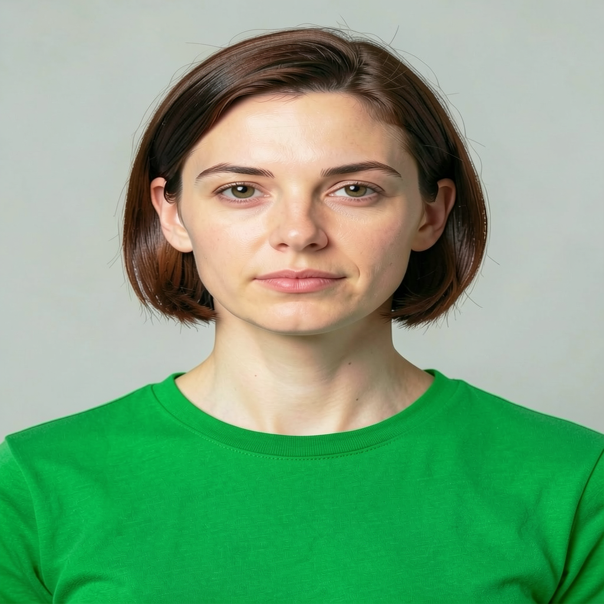
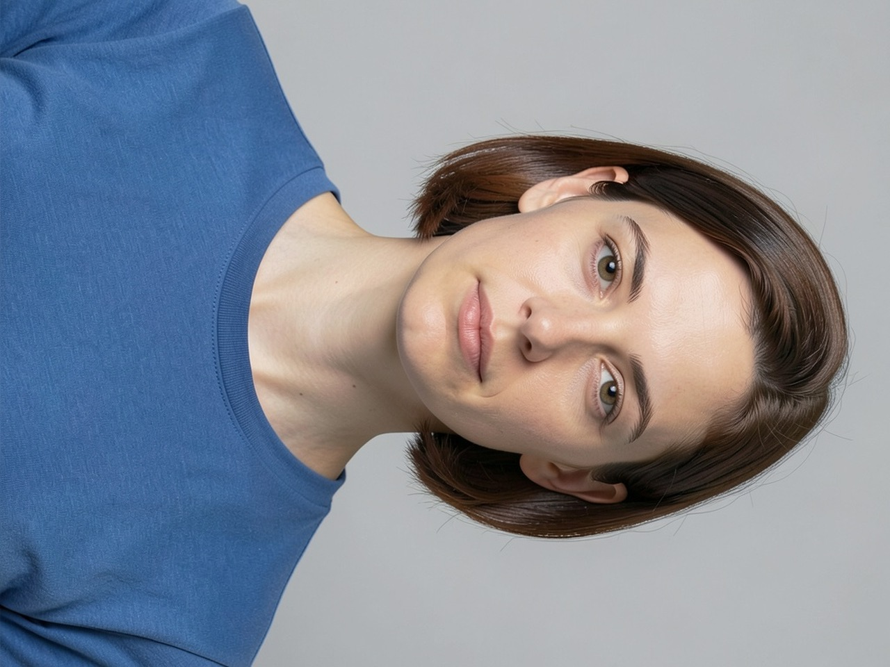
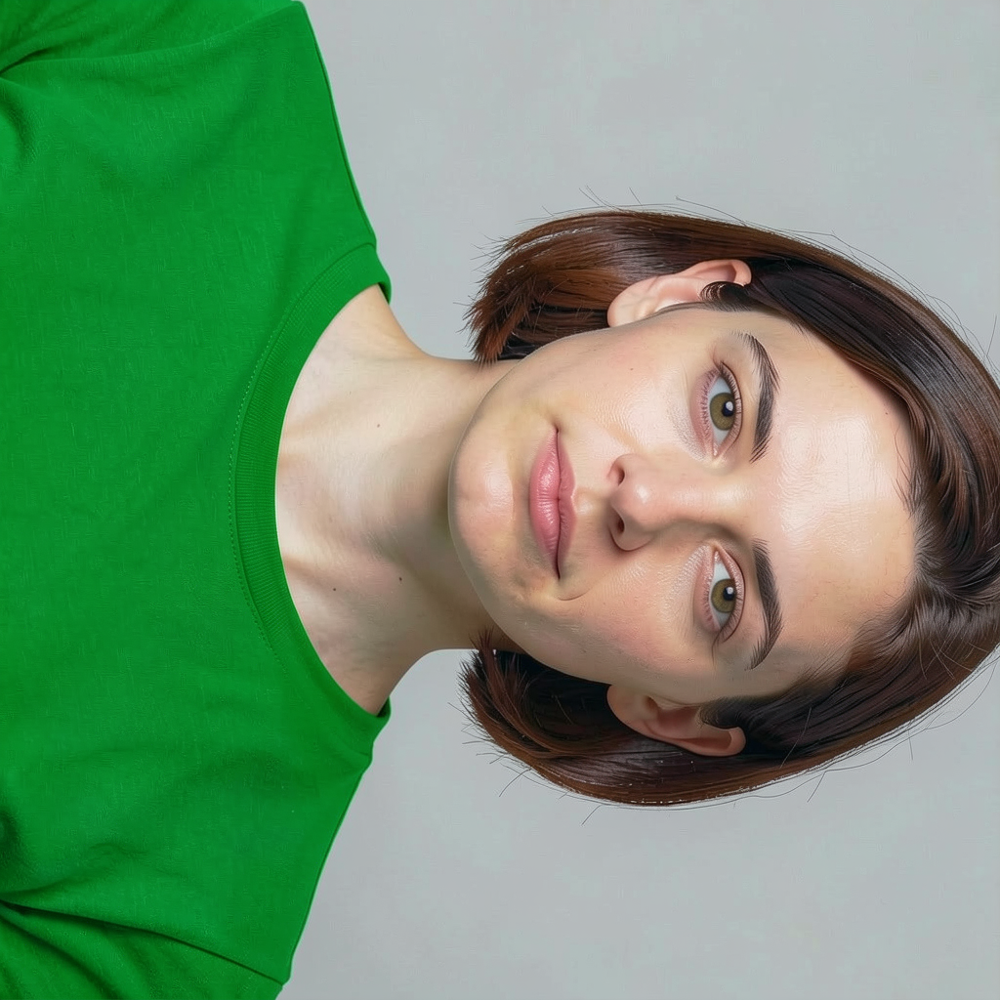
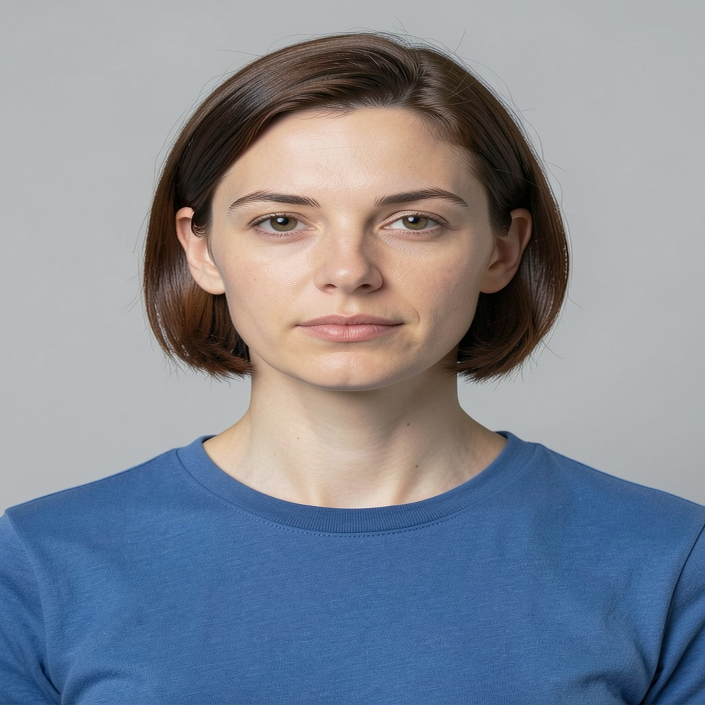
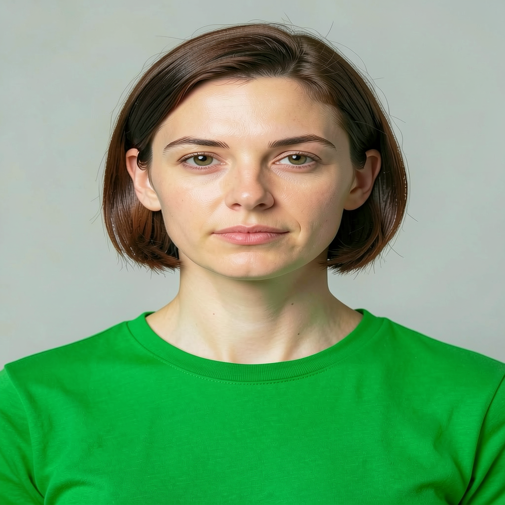

empty-heic
22.97 s initialization + generation/decode. Shirt requested green; unrelated details may change.


Synthetic subject only. Four image-worker invocations and one empty-message preload. Three completed edits; one intentionally cancelled, then successful recovery. No private user photo was used.
The requested shirt color changes work. Facial rendering, skin texture, lighting and framing also change. These are generative edits, without exact likeness or pixel-preservation guarantees. Visual observations are by Codex; user quality acceptance is pending.
22.97 s initialization + generation/decode. Shirt requested green; unrelated details may change.

28.46 s initialization + generation/decode. Shirt requested green; unrelated details may change.


27.06 s initialization + generation/decode. Shirt requested green; unrelated details may change.


Each completed native PNG is 1.35–1.41 MB, plus a separate 1.35–1.41 MB sanitized export. Input photos and normalized references are retained separately for comparison/retry. Cancellation leaves no accepted output.
MLX peak 17.38 GiB; observed host swap stayed at 3,709 MiB; maximum sampled app health request 16.75 ms. All four workers were reaped under the shared lease. This is bounded qualification, not unattended load testing or a production deployment.